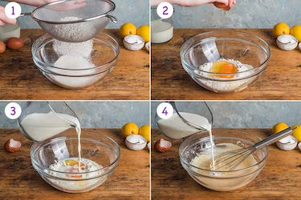
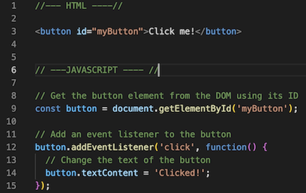
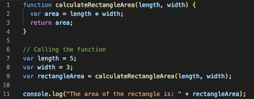

You can think of HTML and CSS as the pen and paper of web development. They provide the basic structure and presentation for a web page.
JavaScript, on the other hand, is like the writer who takes that pen and paper and brings the page to life. It adds interactivity, handles user actions, and makes the web page dynamic. So, HTML and CSS set the stage, while JavaScript does the storytelling.
Control flow refers to the way instructions in a program are followed. It allows you to decide what happens next based on certain conditions. It determines which parts of the program are run and in what order, depending on specific choices or conditions.
Control flow is like following a recipe with different steps, where you make choices based on certain conditions. Loops are like repeating a specific action until you reach a goal.
For making pancakes:
Control flow: You gather the ingredients, mix the batter, heat the pan, and cook the pancakes step by step.
Loop: You pour the batter, cook one pancake, flip it, and repeat this process until you've made the desired number of pancakes.
The DOM (Document Object Model) is a programming interface for web documents. It represents the structure, style, and content of a web page, allowing programs to interact with and manipulate the document. The DOM views an HTML document as a tree of nodes, with each node representing an HTML element. This means that we can access and modify these elements programmatically using languages like CSS and JavaScript.
Interacting with the DOM involves accessing and manipulating the elements and their properties within a web page. Here's an example of how you might interact with the DOM:
Let's say we have an HTML document with a button element and we want to change its text when it's clicked. We can achieve this by using JavaScript to interact with the DOM.

In the example above, we first find the button element from the DOM using the getElementById method and assign it to the button variable. After, we add an event listener to the button, specifying that when it is clicked, a function should be executed. Inside the function, we modify the textContent property of the button to change its text to 'Clicked!'. This way, when the button is clicked, the text on the button will be updated accordingly.
Arrays are ordered lists of values that can be accessed using numeric indices. The elements in an array are stored in a sequential manner and can be accessed using their position or index.
To access data from an array, you use square brackets ([]) and provide the index of the desired element.
Example:
let brands = ['Reebok', 'Nike', 'Adidas'];
let secondBrand = brands[1];
console.log(secondBrand); // Output: NikeObjects are collections of key-value pairs and are not ordered. Data within an object is stored as properties, where each property has a key (name) and a corresponding value.
To access data from an object, you use dot notation (objectName.propertyName) or square brackets with the key (objectName['propertyName']).
Example:
let person = { name: 'Tessie', age: 23, city: 'Hamburg' };
let personAge = person.age;
console.log(personAge); // Output: 23A function is a reusable block of code created to perform a specific task. It is like a smaller program inside the main program. A function is made up of a group of statements, but when you use it, it runs as a single piece.
Functions let us package a block of code and use it again whenever we need it. They bring benefits like making JavaScript code easier to understand, keeping it organized, allowing us to reuse code, and making it simpler to maintain.

In this example, the calculateRectangleArea function takes two parameters: length and width. It multiplies them together to calculate the area of the rectangle and stores the result in a variable called area. Finally, it returns the area.
By encapsulating the code for calculating the rectangle area within the function, we can reuse this functionality whenever we need to calculate the area of a rectangle in different parts of our program.